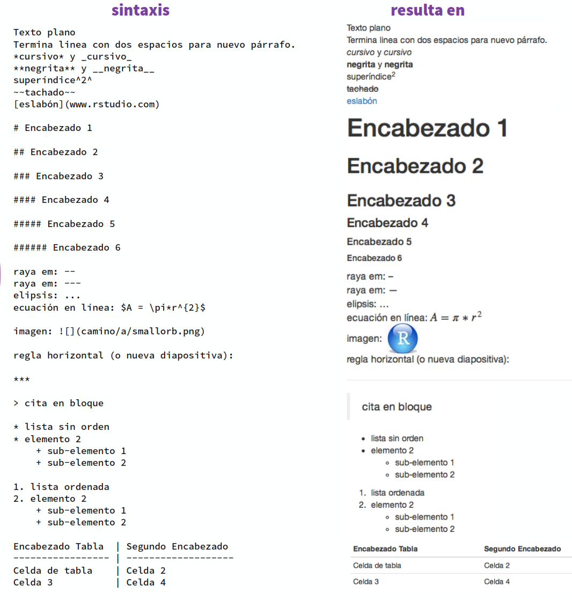
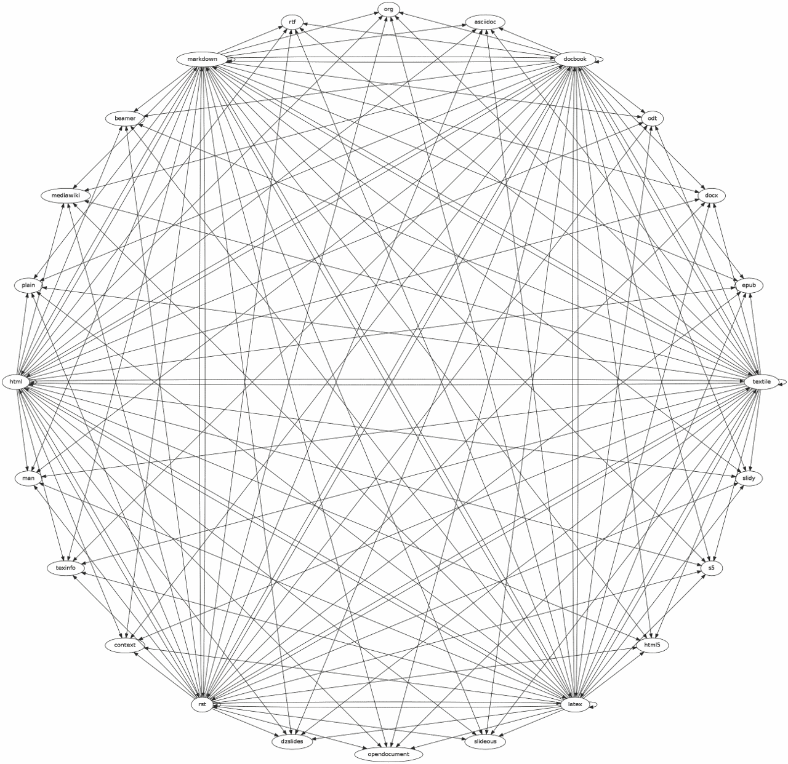
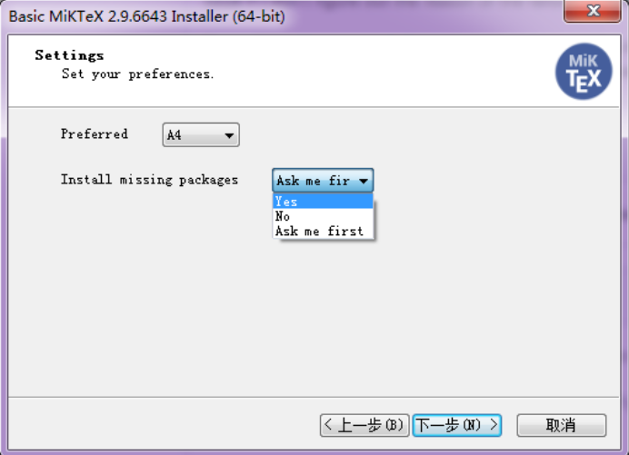

Chapter 3 Markdown, LaTeX y Pandoc
3.1 La escritura con Markdown
Markdown es un lenguaje de marcado ligero ideado en 2004 por John Gruber, con la visión de crear un lenguaje sencillo, fácil de leer y de escribir, aprovechando las ventajas del lenguaje HTML pero eliminando sus inconvenientes, como por ejemplo las etiquetas, que tanto engorran el código. Pongamonos en situación: si estamos escribiendo en HTML, para añadir una palabra en negrita deberíamos escribir <strong>importante</strong> mientras que si estamos escribiendo en Markdownnos bastaría poner **importante** para que cuando lo compilemos, se muestre de esta forma. Huelga decir, que en un procesador de textos al uso deberemos dejar de escribir, coger el ratón, pulsar en el botón de la negrita, volver a escribir, de nuevo coger el ratón, ir a la barra de herramientas, desactivar el formato de negrita y continuar escribiendo (…). A continuación podemos ver algunos ejemplos de la notación de este lenguaje:

En este punto nos puede asaltar la duda ¿Markdown cubre todo el espectro que cubre HTML? Sí y no, porque si no lo cubre, tan solo tienes que escribir la parte de HTML separado una línea del siguiente párrafo en Markdown.
Trabajar con Markdown, tiene infinidad de ventajas, pero es especialmente adecuado para aquellas personas que publican contenido en la web de manera regular. Entre otras ventajas cabe citar que cuando te acostumbras a la sintaxis la generación de texto es extremadamente rápido, es muy sencillo de leer, no tendremos el problema de errores por no cerrar adecuadamente las etiquetas HTML y su compilación con software como Pandoc permite la exportación simple a infinidad de formatos basados en texto.
3.2 Rmarkdown
Rmarkdown es un framework derivado de markdown que nos va a permitir, a la vez, ejecutar líneas de código de R y generar multitud de formatos de publicación, listos para imprimir y/o compartir con los interesados.
Para trabajar con estos tipos de documentos, lo más recomendable es el uso de RStudio, que en sus últimas versiones, viene equipado con todos los elementos necesarios para ejecutar y compilar correctamente estos documentos.
La composición de un documento en Rmarkdown es muy sencilla. Para ello tendremos las opción simple, si estamos en RStudio de File>New File>R Markdown, que nos generará una plantilla con los elementos básicos para la confección del documento. En ella, destacan los tres elementos fundamentales:
- El encabezado YAML, donde se definen las características del documento:
---
title: "Untitled"
author: "Julio M. Sevilla"
date: "20/6/2019"
output: html_document
---- Todos los elementos de texto del documento, escritos en markdown:
## R Markdown
This is an R Markdown document. Los fragmentos de código o chunks de R, iniciados con
```{r}y finalizados con```. Dentro de```{r}podremos incluir desde el nombre del chunk (que nos permitirá identificarlo rapidamente) a acciones omo que no se ejecute, no se muestre el código,etc. tal que, por ejemplo```{r coches, eval=FALSE}. En concreto:include = FALSEimpide que el código y los resultados aparezcan en el archivo terminado, si bien los resultados existirán en la memoria.echo = FALSEimpide que el código, pero no los resultados, aparezcan en el archivo terminado. Esta es una forma útil de incrustar figuras y datos donde no importa tanto como se construye si no el resultado finalmessage = FALSEimpide que los mensajes generados por el código aparezcan en el archivo terminado.warning = FALSEimpide que las advertencias generadas por el código aparezcan en el terminado.fig.cap = "..."agrega un título a los resultados gráficos.
En relación a esto último, si deseamos establecer opciones globales que se aplican a cada fragmento del archivo, podemos crear un fragmento de código inicial en el que introduciremos knitr::opts_chunk$set() y añadiendo dentro del paréntesis las distintas acciones que deseemos (cuando creamos un nuevo script de RMarkdown veremos que este fragmento inicial se crea por defecto con echo = TRUE)
Cuando compilemos el documento, previo guardado en nuestra computadora, a traves de pulsar en el botón Knit de RStudio, se generará un documento, en este caso en formato HTML, listo para impresión y con los resultados de nuestro análisis.
En https://www.rstudio.com/wp-content/uploads/2015/03/rmarkdown-reference.pdf Tenemos una guía completa de lenguaje (tambien podemos acceder a ella en RStudio desde Help>Cheetsheets)
3.3 Pandoc y la conversión entre formatos.
Pandoc es una herramienta de libre y de código abierto, creado por John MacFarlane y que permite la conversión entre múltiples formatos de marcado a partir de un motor de renderizado común:

Basicamente, el trabajo con pandoc consiste en que, una vez tengamos creado el documento, para lo cual recomendamos se haga en Markdown, el motor de renderizado de Pandoc lo convertira en el formato que deseemos.
3.4 Instalación de los elementos necesarios
Para comenzar deberemos instalar todas las librerias que a priori vamos a necesitar para gestionar nuestros documentos científicos:
- En el caso de que usemos RStudio no será necesario, pero en caso contrario es obligatorio la instalación de Pandoc
- Con RStudio, solo deberemos instalar la librería
rmarkdownsin tener que ejecutar el paso anterior
install.packages('rmarkdown')- En general querremos derivar el resultado final en pdf, pero para ello, antes deberemos instalar LaTeX. La forma más sencilla de ejecutar este paso es mediante la instalación de la librería
TinyTeX. Debemos tener en cuenta que esta librería, para instalarse necesita de Rtools en nuestro Pc, por lo que si no lo tenemos deberemos instalarlo.
tinytex::install_tinytex()En ocasiones, la instalación de TinyTeX deriva en problemas y no se pueden compilar los documentos. Si esto ocurre, deberemos instalar MiKTeX (en el caso de que nuestro sistema operativo sea Windows). Al hacerlo, deberemos indicarle que instale todas las aplicaciones necesarias:

Si ya tenemos este software instalado en nuestro PC, deberemos ir a la configuración y en Settings, elegir la opción Always install missing packages on-the-fly.
3.5 El lenguaje LaTeX
Anteriormente hemos apuntado que para generar el formato pdf es necesario pasar por un paso previo, instalar LaTeX, en concreto el sistema que nos permite su compilación. LaTeX es un sistema de preparación de documentos por comandos de bajo nivel, usado para escribir grandes textos científicos y técnicos, que fue desarrollado en 1985 por Leslie Lamport y que a diferencia de los procesadores de texto actuales WYSIWYG, permite al escritor centrarse en el contenido sin tener que preocuparse por el formato, algo que realizará el sistema LaTeX.
A grandes rasgos, un documento en LaTeX se compone de la siguiente estructura:
\documentclass[opciones]{clase}
Preámbulo
\begin{document}
Documento
\end{document}En las opciones se definirán al menos el tamaño del papel (por ejemplo, a4paper) y el tamaño de letra (por ejemplo, 12pt).
Si queremos ahondar más en la escritura con LaTeX recomendamos la lectura del documento https://www.uv.es/~ivorra/Latex/LaTeX.pdf de Carlos Ivorra.
En un documento de Rmarkdown, la generación de un documento en LaTeX es muy sencillo si tenemos ya instaladas las librerias citadas antes. Con ello, solo deberemos configurar el encabezado de nuestro documento como:
---
title: "Untitled"
author: "Julio M. Sevilla"
date: "20/6/2019"
output:
html_document:
toc: true
pdf_document:
keep_tex: true
---De esta forma, donde se haya guardado el documento Rmd tambien se generarán los documentos compilados en HTML, pdf y tex.